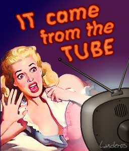

|

Fear TV
Anthrax and snipers and terrorists. Oh my!
- - - - - - - - - -
by Rob Landeros
 E WATCH THE NEWS and are frightened. America isn't the home of the brave. It is the home of the scaredy cat weenies. E WATCH THE NEWS and are frightened. America isn't the home of the brave. It is the home of the scaredy cat weenies.
As of this writing, there is a sniper on the loose in the DC area and people there are afraid to go outside, gas up their cars or go shopping. It is an interesting story and one that deserves coverage, especially in the Maryland area, but the national media are once again whipping up a frenzy, as they did with the shark attacks of '01 and this year's child abduction cases that provided endless grist for the Connie Chung mill. In both of those instances, the rate of incidences were actually down from previous years, just as homocides are down 20% while reportage of them is up by 600%.
If there isn't a legitimate story that is frightening enough, the media will manufacture one. Can you imagine that if the networks decided to interrupt your regular programming with news of each fatal car accident? The airwaves would consist of non-stop breaking news and an endless series of special reports. People would be terrified to drive to work or to the local market believing that all of a sudden there is a rash of crazed motorists on the loose. (There are crazed motorists on the loose, it's just not all of a sudden.) We would be paralyzed with fear and commerce would come to a standstill.
It is quite evident that network news wants to frighten us and keep us in a constant state of fear. That is their stock in trade and they are plying it to great effect. In his new movie, "Bowling for Columbine", Michael Moore interviews Marilyn Manson who notes that the country runs on fear and consumerism. The more we're afraid, the more we buy. I can't say if there is causality between the two, but I wouldn't be surprised if there were.
Media have always sensationalized and fed into our basic fears, but it has ratcheted up the program a few notches, especially since 9/11. The Bush administration and most Republicans have been exploiting it since. But I won't pick on them too much. The Democrats would probably have done the same had Gore run a better campaign.
It's easy to say "don't be afraid". But we can be not afraid if we don't give in to the irrational. It is said that the lottery is an unfair tax on people who are too stupid to understand odds. The same might be said of irrational fear of terrorists.
|
The 9/11 attacks were an important turning point in history. Of course we should be angry and resolved to take measures to secure our national security. But the incident must not continue to cause this country to behave out of fear. I would echo the words of Franklin Roosevelt and suggest that the main thing we have to fear is fear itself. Truly, the aim of the terrorists is not to defeat our armies or to kill most of us. It is to instill enough paranoia that we alter our behavior, slow down our economy, give up our civil liberties and lash out at perceived enemies at home and abroad. We might even instigate a conflagration between the East and the West. It is in this way that we allow the terrorist to win. And by that measure, they seem to be winning.
Do you remember when it was all anthrax all the time? How many were killed or affected? Four deaths and a handful of infected or exposed? Quite miniscule for a national terrorist attack. The real agent of terror was not the actual germ, it was the media. There is no doubt that media figures and news outlets were intentionally targeted in order to exploit the media for maximum dissemination of the fear. And we fell for it hook, line and sinker. As Sen. Ben Nelson, D-Neb., said at the time, anthrax "is not a weapon of mass destruction, it is a weapon of mass confusion." The same could be said about the news coverage, the unwitting accomplice in the whole affair.
Fear is a good instinct and has its place. In the appropriate circumstance it helps keeps us alive and ensures the survival of our species. But irrational fear is not so good. That is paranoia. And paranoia is what is ailing this country in recent months.
At best, the news reports give only passing mention of the unlikelihood of being a victim of a sniper or terrorist attack. There is too much grim-faced reporting and too little putting things into perspective. Allow me to take a stab at it.
Recently I was diagnosed with a life-threatening illness. According to all available information on the subject, I had a 75% chance for successful treatment. When I told my friends and family about my chances, they were very encouraged and encouraging. With a 25% failure rate, my optimism was not as strong as theirs. Those odds sound fine when talking about somebody else's life, but imagine putting one bullet in a four chamber barrel, giving it a spin, putting it in your mouth and pulling the trigger. The odds are not so reassuring in that circumstance are they? A 90% success rate would be much more hopeful. Think of standing in a field with nine other people knowing that one of you would be struck and killed by lightning. You would be very nervous. But if you really thought about your chances, you might not be so anxious. Being one of 20 people in that field and you'd probably start to feel less concerned for yourself than for the poor shmuck that would soon no longer be with us. Now increase that number of people to 5 milliion which is an approximate number of citizens in the target-rich Maryland/Virginia area who could be randomly picked off by a sniper. At that point you should start worrying more about getting struck by that bolt of lightning. Or your could worry about being one of the victims of the 11,000 other homocides that are committed each year in the US. Or better yet, you could try to not worry at all.
It is a little ironic that the same people who would assure me that the 3 out of 4 odds of my beating my illness are good would be the same ones who would fear becoming a victim of a gunman in a huge metropolitan area.
It's easy to say "don't be afraid". But we can be not afraid if we don't give in to the irrational. It is said that the lottery is an unfair tax on people who are too stupid to understand odds. The same might be said of irrational fear of terrorists. It is natural and understandable when children are afraid of the boogyman under the bed. But people generally grow out of their childhood fears due to their gained experience and developed rational facilities. It is time for adults to start behaving as adults and not as children cowering under the sheets at monsters that, for all intents and purposes, are not there.
There is no department of Homeland Security and there won't be for a long time. Airport security has not improved. Air travel has merely become more inconvenient. Law enforcement hasn't caught the sniper and the military didn't get Bin Laden. Al Qaeda is reconstituting itself. There have been a series of terrorist attacks in Indonesia and elsewhere. We're about to piss of the entire Middle East and Muslim countries by going to war with Iraq. Our CIA chief tells us that our national security is no better today than it was in the summer of '01 and that a terrorist attack is imminent and there is not much anybody can do about it.
So Americans, you might as well stop worrying and get used to it. Go out and have a nice day.

|